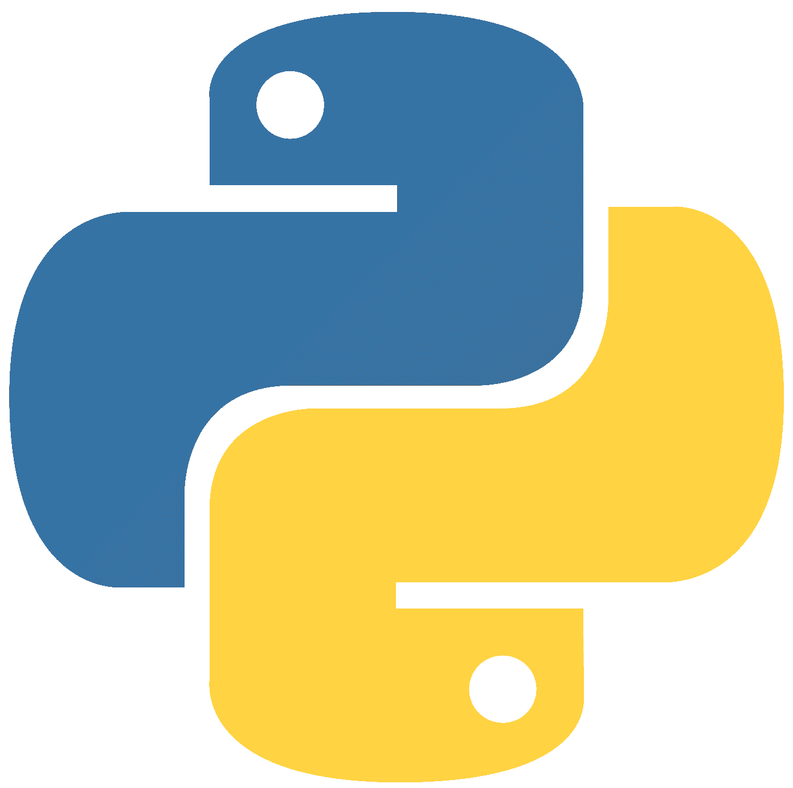
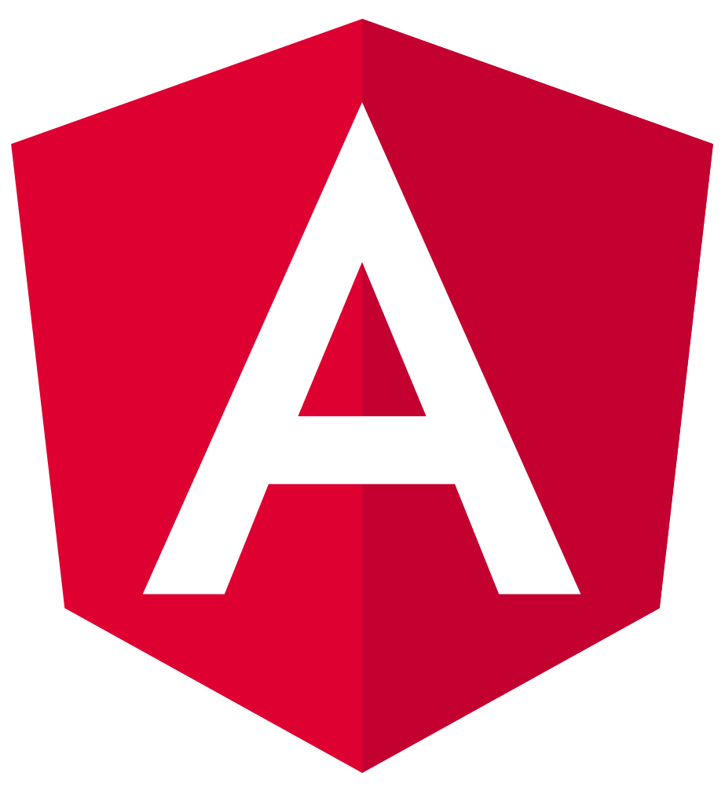
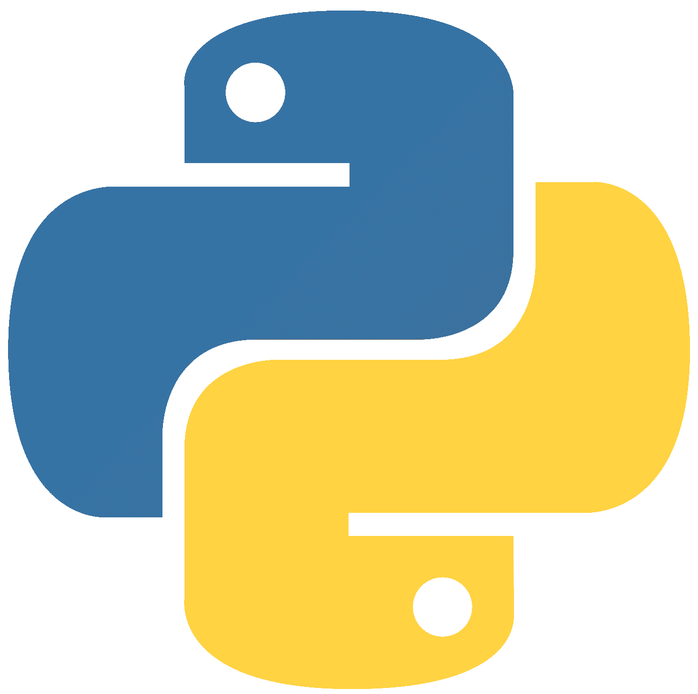
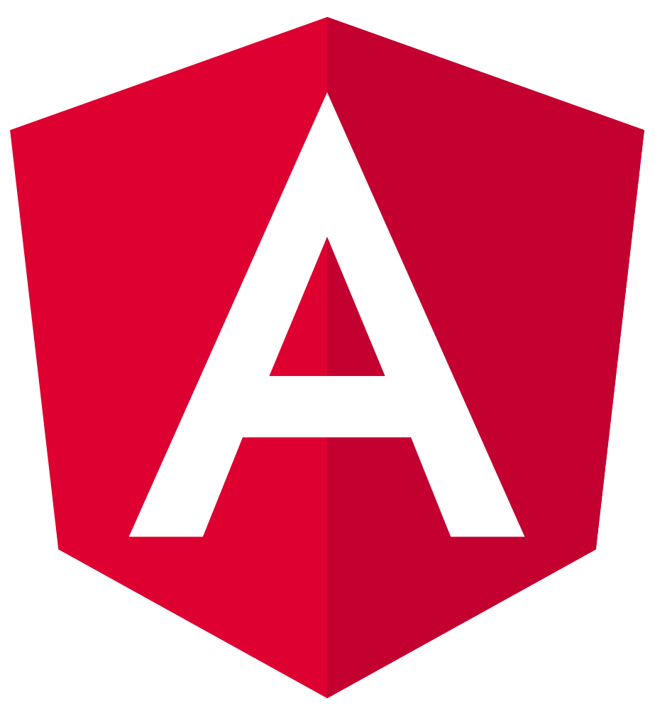
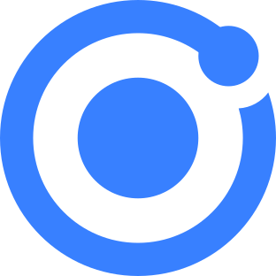
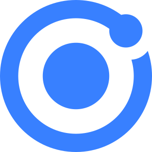

🛠️ Technologies & Tools

 



 

About me
I'm a passionate Software Development student who loves learning new technologies and building projects. I especially enjoy working on the backend with Python, but I also have experience in frontend development using React, Angular, TypeScript, and Ionic.
My focus is on developing customized technology solutions that drive digital transformation, aligning myself with the mission to deliver innovation and quality in every project. I value teamwork, problem solving and continuous improvement, always looking to exceed expectations and deliver high impact results.
In addition, I consider myself an active, disciplined person, committed to my professional and academic growth. I am constantly learning, driven by the goal of leaving a positive footprint both in my projects and in my training as a developer.
My personal profile
🎂 22 years old
🎓 Software Development student
🖥️ Passionate about backend development with Python
🌐 Skilled in frontend technologies: React, Angular, TypeScript, Ionic
🛹 Skateboarding enthusiast in my free time
🚀 Always curious and learning new skills